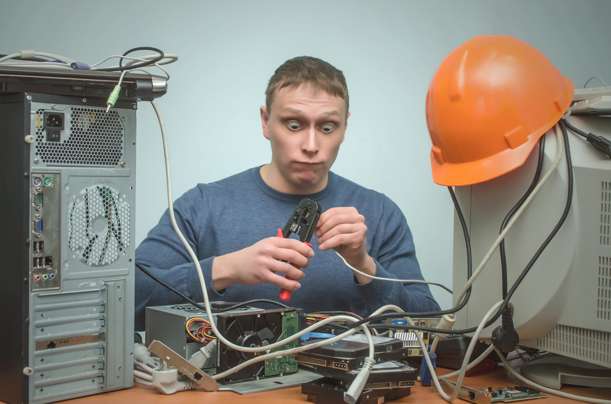

ES RECOMENDABLE REPARAR NUESTRO EQUIPO SOLOS?
| 
| Reparar tu computadora por cuenta propia es desaconsejable debido a la complejidad de los componentes, el riesgo de daños irreparables y la posible pérdida de garantía. La falta de experiencia aumenta la probabilidad de errores y peligros eléctricos. Es más seguro buscar la ayuda de profesionales capacitados para evitar complicaciones y garantizar una reparación efectiva. Mantener prácticas como copias de seguridad y actualizaciones periódicas previene problemas antes de que ocurran.
|